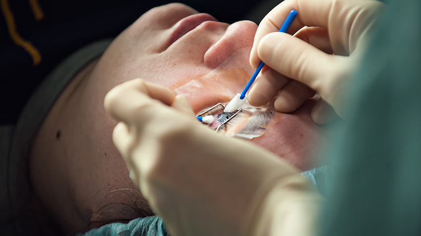

Bio and Health Technology

Nanomedicine
Nanomedicine is a branch of medicine that applies the knowledge and tools of nanotechnology to the prevention and treatment of disease.
Learn More.

Lasik
LASIK or Lasik, commonly referred to as laser eye surgery or laser vision correction,
is a type of refractive surgery for the correction of myopia, hyperopia, and astigmatism.
Learn More.

Telehealth
Telehealth is the use of communications technologies to provide health care from a distance.
Learn More.